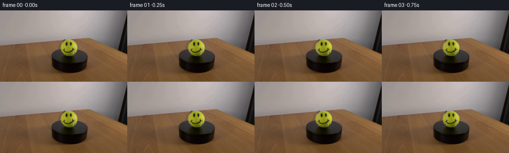
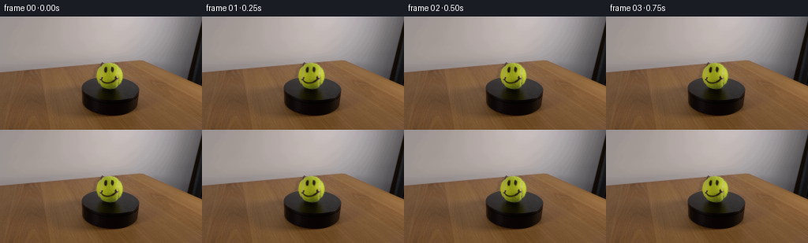
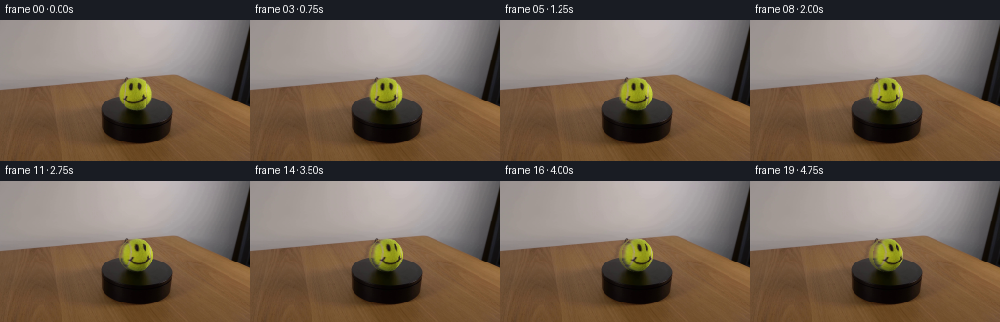
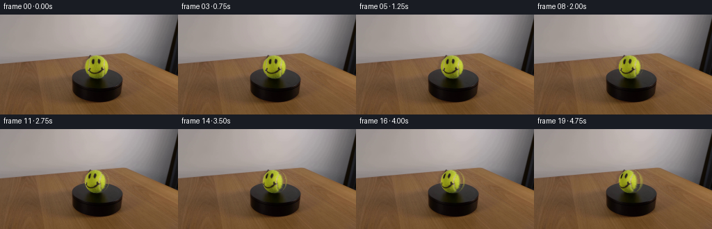

CODING AGENTS AS PIXEL WORLD MODELS
traex/GPT-5.6-Sol · 0166
点击播放 · 原生 RGB 像素
逐轮保存的候选
回放视频、检查图与代码变化。
每份候选均可单独播放。实际图片检查记录在下方工具轨迹中。
候选 01播放与检查图
点击播放 · 原生 RGB 像素


展开代码变化
--- 上一保存版本
+++ 本次保存版本
@@ -0,0 +1,101 @@
+"""Generate a locked-off 5 s RGB clip of the smiley tennis ball rotating.
+
+The implementation uses only the supplied first frame. It treats the ball as
+an analytically shaded sphere: surface pixels are inverse-mapped around its
+vertical axis, while the stationary scene and platform remain untouched.
+"""
+from pathlib import Path
+import cv2
+import numpy as np
+from PIL import Image
+import artifact_io
+
+CASE_DIR = Path(__file__).resolve().parent
+N_FRAMES = 20
+
+
+def soft_ball_mask(h, w, cx=139.0, cy=75.0, rx=17.7, ry=17.35):
+ """Antialiased mask restricted to the visible fuzzy ball silhouette."""
+ yy, xx = np.mgrid[:h, :w]
+ # Keep the base conservative so no portion of the black platform moves.
+ d = np.sqrt(((xx - cx) / rx) ** 2 + ((yy - cy) / ry) ** 2)
+ geom = np.clip((1.018 - d) / 0.055, 0.0, 1.0)
+
+ # Tennis yellow distinguishes the true fuzzy outline from the wall/table.
+ # A gently dilated chroma mask includes dim edge fibres and dark ink.
+ src = cv2.imread(str(CASE_DIR / "first_frame.png"), cv2.IMREAD_COLOR)
+ hsv = cv2.cvtColor(src, cv2.COLOR_BGR2HSV)
+ yellow = cv2.inRange(hsv, np.array((20, 55, 48)), np.array((55, 255, 255))) / 255.0
+ yellow = cv2.GaussianBlur(yellow.astype(np.float32), (0, 0), 1.05)
+ yellow = np.clip(yellow * 1.9, 0, 1)
+ yellow = cv2.dilate(yellow, np.ones((3, 3), np.uint8), iterations=1)
+ # Inside the sphere, dark facial paint belongs to the ball regardless of hue.
+ core = np.clip((0.94 - d) / 0.035, 0, 1)
+ return geom * np.maximum(yellow, core)
+
+
+def rotate_sphere(src, angle, mask, cx=139.0, cy=75.0, rx=17.7, ry=17.35):
+ """Inverse-map a front-facing spherical texture after a yaw rotation.
+
+ Front-frame texture is used where visible. Newly revealed areas use a
+ seamless tennis-yellow estimate, with source shading/detail transported
+ from nearby surface samples. This matters mainly late in the modest turn.
+ """
+ h, w = src.shape[:2]
+ yy, xx = np.mgrid[:h, :w].astype(np.float32)
+ xn = (xx - cx) / rx
+ yn = (yy - cy) / ry
+ z = np.sqrt(np.maximum(0.0, 1.0 - xn*xn - yn*yn))
+ lon_out = np.arctan2(xn, z)
+ lat = np.arcsin(np.clip(yn, -1, 1))
+ lon_src = lon_out - angle
+
+ # Projection into the original frontal view. It is valid while this
+ # longitude lies on the source-visible hemisphere.
+ mapx = (cx + rx * np.cos(lat) * np.sin(lon_src)).astype(np.float32)
+ mapy = (cy + ry * np.sin(lat)).astype(np.float32)
+ visible = np.cos(lon_src) > 0.035
+ sampled = cv2.remap(src, mapx, mapy, cv2.INTER_CUBIC,
+ borderMode=cv2.BORDER_REFLECT_101).astype(np.float32)
+
+ # Inpaint only texture entering from the rear. A blurred ball texture keeps
+ # the same photographic illumination and avoids a synthetic flat edge.
+ base = cv2.GaussianBlur(src, (0, 0), 3.2).astype(np.float32)
+ # Carry subtle fuzzy high-frequency detail from the mirrored nearest edge.
+ edge_lon = np.clip(lon_src, -1.48, 1.48)
+ ex = (cx + rx * np.cos(lat) * np.sin(edge_lon)).astype(np.float32)
+ edge = cv2.remap(src, ex, mapy, cv2.INTER_LINEAR,
+ borderMode=cv2.BORDER_REFLECT_101).astype(np.float32)
+ fill = 0.72 * base + 0.28 * edge
+ ball = np.where(visible[..., None], sampled, fill)
+
+ # Very slight limb darkening follows the sphere rather than the painted
+ # texture; source already contains almost all illumination, so keep subtle.
+ limb = 0.985 + 0.015 * np.clip(z, 0, 1)
+ ball *= limb[..., None]
+
+ out = src.astype(np.float32).copy()
+ a = mask[..., None]
+ out = out * (1.0 - a) + ball * a
+ return np.clip(out + 0.5, 0, 255).astype(np.uint8)
+
+
+def generate():
+ src = np.asarray(Image.open(CASE_DIR / "first_frame.png").convert("RGB"), dtype=np.uint8)
+ h, w = src.shape[:2]
+ assert (w, h) == (256, 144)
+ mask = soft_ball_mask(h, w)
+ frames = np.empty((N_FRAMES, h, w, 3), dtype=np.uint8)
+ frames[0] = src # exact contract requirement
+
+ # Slow, constant clockwise rotation as viewed from above: features drift
+ # gently to screen right. 38 degrees over 4.75 seconds is clearly visible
+ # without making the scientific display feel hurried.
+ total_angle = np.deg2rad(38.0)
+ for i in range(1, N_FRAMES):
+ frames[i] = rotate_sphere(src, total_angle * i / (N_FRAMES - 1), mask)
+ return frames
+
+
+if __name__ == "__main__":
+ artifact_io.save(generate(), CASE_DIR)
候选 02播放与检查图
点击播放 · 原生 RGB 像素


展开代码变化
--- 上一保存版本
+++ 本次保存版本
@@ -89,9 +89,9 @@
frames[0] = src # exact contract requirement
# Slow, constant clockwise rotation as viewed from above: features drift
- # gently to screen right. 38 degrees over 4.75 seconds is clearly visible
+ # gently to screen left (the near side of a top-view clockwise turn). 38 degrees over 4.75 seconds is clearly visible
# without making the scientific display feel hurried.
- total_angle = np.deg2rad(38.0)
+ total_angle = np.deg2rad(-38.0)
for i in range(1, N_FRAMES):
frames[i] = rotate_sphere(src, total_angle * i / (N_FRAMES - 1), mask)
return frames
可观测工具轨迹
实际执行的命令与返回图片。
命令 1exit 0
/bin/bash -lc "cat prompt.txt && printf '\\n---RULES---\\n' && cat GENERATION_RULES.md"
命令 2exit 0
/bin/bash -lc "find . -maxdepth 2 -type f -printf '%p %s bytes\\n' | sort && printf '\\nffmpeg: '; command -v ffmpeg || true; printf 'python: '; command -v python3 || true"
命令 3exit 0
/bin/bash -lc "python3 - <<'PY'
mods=['PIL','cv2','numpy','scipy','skimage']
for m in mods:
try:
x=__import__(m); print(m,'ok',getattr(x,'__version__',''))
except Exception as e: print(m,'NO',e)
from PIL import Image
im=Image.open('first_frame.png'); print(im.mode, im.size)
PY"命令 4exit 0
/bin/bash -lc "python3 - <<'PY'
from PIL import Image
im=Image.open('first_frame.png')
im.crop((112,48,168,104)).resize((560,560)).save('.tmp/ball_crop.png')
PY"命令 5exit 0
/bin/bash -lc "python3 - <<'PY'
import cv2, numpy as np
im=cv2.imread('first_frame.png'); hsv=cv2.cvtColor(im,cv2.COLOR_BGR2HSV)
for lo,hi in [((20,70,60),(50,255,255)),((25,80,80),(45,255,255)),((20,100,100),(45,255,255))]:
m=cv2.inRange(hsv,np.array(lo),np.array(hi)); n,lab,st,cen=cv2.connectedComponentsWithStats(m)
idx=np.argsort(st[:,4])[::-1]
print(lo,[(st[i].tolist(),cen[i].tolist()) for i in idx[:4]])
PY"命令 6exit 0
/bin/bash -lc "sed -n '1,240p' artifact_io.py"
命令 7exit 0
/bin/bash -lc "python3 - <<'PY'
import cv2, numpy as np
im=cv2.imread('first_frame.png'); rgb=im[:,:,::-1]
cx,cy,r=139,75,17.3
Y=cv2.cvtColor(im,cv2.COLOR_BGR2GRAY)
y,x=np.indices(Y.shape); ball=(x-cx)**2+(y-cy)**2<r*r
for t in [60,70,80,90,100,110,120,130]:
yy,xx=np.where(ball&(Y<t)); print(t,len(xx), (xx.min(),xx.max(),yy.min(),yy.max()) if len(xx) else '')
print('matrix gray')
print(Y[59:93,122:157])
PY"命令 8exit 1
/bin/bash -lc "cat > generate.py <<'PY'
\"\"\"Generate a locked-off 5 s RGB clip of the smiley tennis ball rotating.
The implementation uses only the supplied first frame. It treats the ball as
an analytically shaded sphere: surface pixels are inverse-mapped around its
vertical axis, while the stationary scene and platform remain untouched.
\"\"\"
from pathlib import Path
import cv2
import numpy as np
from PIL import Image
import artifact_io
CASE_DIR = Path(__file__).resolve().parent
N_FRAMES = 20
def soft_ball_mask(h, w, cx=139.0, cy=75.0, rx=17.7, ry=17.35):
\"\"\"Antialiased mask restricted to the visible fuzzy ball silhouette.\"\"\"
yy, xx = np.mgrid[:h, :w]
# Keep the base conservative so no portion of the black platform moves.
d = np.sqrt(((xx - cx) / rx) ** 2 + ((yy - cy) / ry) ** 2)
geom = np.clip((1.018 - d) / 0.055, 0.0, 1.0)
# Tennis yellow distinguishes the true fuzzy outline from the wall/table.
# A gently dilated chroma mask includes dim edge fibres and dark ink.
src = cv2.imread(str(CASE_DIR / \"first_frame.png\"), cv2.IMREAD_COLOR)
hsv = cv2.cvtColor(src, cv2.COLOR_BGR2HSV)
yellow = cv2.inRange(hsv, np.array((20, 55, 48)), np.array((55, 255, 255))) / 255.0
yellow = cv2.GaussianBlur(yellow.astype(np.float32), (0, 0), 1.05)
yellow = np.clip(yellow * 1.9, 0, 1)
yellow = cv2.dilate(yellow, np.ones((3, 3), np.uint8), iterations=1)
# Inside the sphere, dark facial paint belongs to the ball regardless of hue.
core = np.clip((0.94 - d) / 0.035, 0, 1)
return geom * np.maximum(yellow, core)
def rotate_sphere(src, angle, mask, cx=139.0, cy=75.0, rx=17.7, ry=17.35):
\"\"\"Inverse-map a front-facing spherical texture after a yaw rotation.
Front-frame texture is used where visible. Newly revealed areas use a
seamless tennis-yellow estimate, with source shading/detail transported
from nearby surface samples. This matters mainly late in the modest turn.
\"\"\"
h, w = src.shape[:2]
yy, xx = np.mgrid[:h, :w].astype(np.float32)
xn = (xx - cx) / rx
yn = (yy - cy) / ry
z = np.sqrt(np.maximum(0.0, 1.0 - xn*xn - yn*yn))
lon_out = np.arctan2(xn, z)
lat = np.arcsin(np.clip(yn, -1, 1))
lon_src = lon_out - angle
# Projection into the original frontal view. It is valid while this
# longitude lies on the source-visible hemisphere.
mapx = cx + rx * np.cos(lat) * np.sin(lon_src)
mapy = cy + ry * np.sin(lat)
visible = np.cos(lon_src) > 0.035
sampled = cv2.remap(src, mapx, mapy, cv2.INTER_CUBIC,
borderMode=cv2.BORDER_REFLECT_101).astype(np.float32)
# Inpaint only texture entering from the rear. A blurred ball texture keeps
# the same photographic illumination and avoids a synthetic flat edge.
base = cv2.GaussianBlur(src, (0, 0), 3.2).astype(np.float32)
# Carry subtle fuzzy high-frequency detail from the mirrored nearest edge.
edge_lon = np.clip(lon_src, -1.48, 1.48)
ex = cx + rx * np.cos(lat) * np.sin(edge_lon)
edge = cv2.remap(src, ex, mapy, cv2.INTER_LINEAR,
borderMode=cv2.BORDER_REFLECT_101).astype(np.float32)
fill = 0.72 * base + 0.28 * edge
ball = np.where(visible[..., None], sampled, fill)
# Very slight limb darkening follows the sphere rather than the painted
# texture; source already contains almost all illumination, so keep subtle.
limb = 0.985 + 0.015 * np.clip(z, 0, 1)
ball *= limb[..., None]
out = src.astype(np.float32).copy()
a = mask[..., None]
out = out * (1.0 - a) + ball * a
return np.clip(out + 0.5, 0, 255).astype(np.uint8)
def generate():
src = np.asarray(Image.open(CASE_DIR / \"first_frame.png\").convert(\"RGB\"), dtype=np.uint8)
h, w = src.shape[:2]
assert (w, h) == (256, 144)
mask = soft_ball_mask(h, w)
frames = np.empty((N_FRAMES, h, w, 3), dtype=np.uint8)
frames[0] = src # exact contract requirement
# Slow, constant clockwise rotation as viewed from above: features drift
# gently to screen right. 38 degrees over 4.75 seconds is clearly visible
# without making the scientific display feel hurried.
total_angle = np.deg2rad(38.0)
for i in range(1, N_FRAMES):
frames[i] = rotate_sphere(src, total_angle * i / (N_FRAMES - 1), mask)
return frames
if __name__ == \"__main__\":
artifact_io.save(generate(), CASE_DIR)
PY
python3 generate.py
python3 - <<'PY'
from PIL import Image
import numpy as np
im=np.array(Image.open('first_frame.png'))
f=np.array(Image.open('frames/00.png'))
print('frame0 exact',np.array_equal(im,f))
for i in [1,5,10,15,19]:
x=np.array(Image.open(f'frames/{i:02d}.png'))
d=np.any(x"'!=im,axis=2)
print(i,d.sum(),np.where(d)[1].min(),np.where(d)[1].max(),np.where(d)[0].min(),np.where(d)[0].max(),np.abs(x.astype(int)-im).mean())
PY'命令 9exit 0
/bin/bash -lc "python3 - <<'PY'
p='generate.py'
s=open(p).read().replace('mapx = cx + rx * np.cos(lat) * np.sin(lon_src)\\n mapy = cy + ry * np.sin(lat)', 'mapx = (cx + rx * np.cos(lat) * np.sin(lon_src)).astype(np.float32)\\n mapy = (cy + ry * np.sin(lat)).astype(np.float32)').replace('ex = cx + rx * np.cos(lat) * np.sin(edge_lon)', 'ex = (cx + rx * np.cos(lat) * np.sin(edge_lon)).astype(np.float32)')
open(p,'w').write(s)
PY
python3 generate.py
python3 - <<'PY'
from PIL import Image
import numpy as np
im=np.array(Image.open('first_frame.png'))
f=np.array(Image.open('frames/00.png'))
print('frame0 exact',np.array_equal(im,f))
for i in [1,5,10,15,19]:
x=np.array(Image.open(f'frames/{i:02d}.png'))
d=np.any(x"'!=im,axis=2); ys,xs=np.where(d)
print(i,d.sum(),(xs.min(),xs.max(),ys.min(),ys.max()),np.abs(x.astype(int)-im).mean())
PY'命令 10exit 0
/bin/bash -lc "sed -i 's/total_angle = np.deg2rad(38.0)/total_angle = np.deg2rad(-38.0)/' generate.py
# Also correct the direction comment.
python3 - <<'PY'
p='generate.py'; s=open(p).read(); s=s.replace('features drift\\n # gently to screen right.', 'features drift\\n # gently to screen left (the near side of a top-view clockwise turn).'); open(p,'w').write(s)
PY
python3 generate.py"命令 11exit 0
/bin/bash -lc "python3 - <<'PY'
import numpy as np
from PIL import Image
f=np.stack([np.array(Image.open(f'frames/{i:02}.png')) for i in range(20)])
assert f.shape==(20,144,256,3) and f.dtype==np.uint8
assert np.array_equal(f[0],np.array(Image.open('first_frame.png')))
print('validated',f.shape,f.dtype,'pixels.npz',__import__('os').path.getsize('pixels.npz'))
PY
ls -l generate.py pixels.npz inspection.png index.html frames/00.png frames/19.png"视觉工具实际返回图片 1

视觉工具实际返回图片 2
视觉工具实际返回图片 3

视觉工具实际返回图片 4

保存候选 2 份；完成命令 11 次；可验证图片返回 4 张。原始 API 响应与完整日志保留在本地。